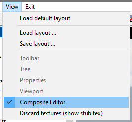
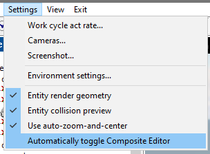
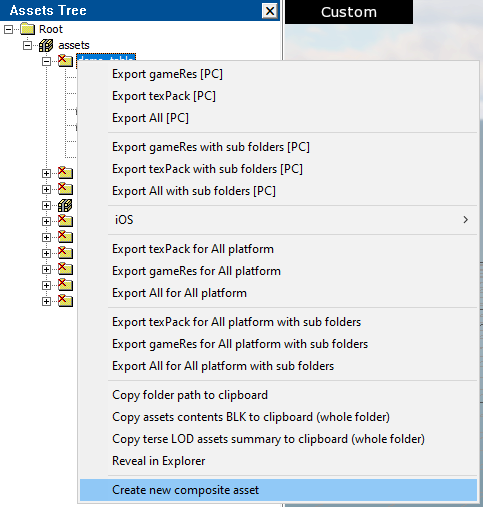
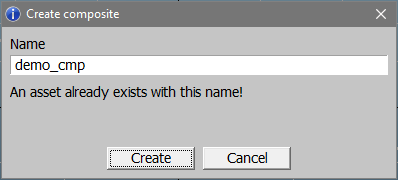
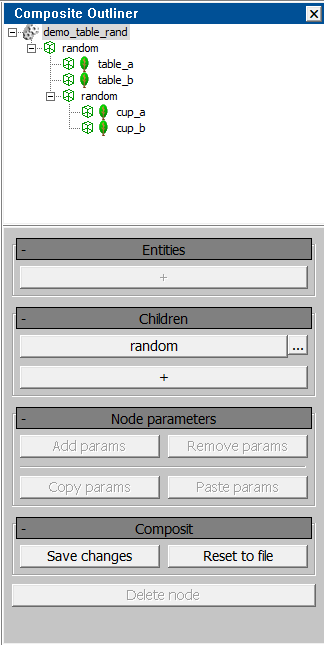
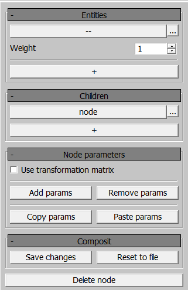
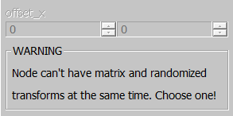

Asset Viewer Composite Editor
Overview
Before proceeding, it is highly recommended to review the main article on composite structures.
How to Enable
You can now edit composites directly from the Asset Viewer. To enable the Composite Editor, navigate to the View menu:
If you prefer the editor to open automatically when a composite is selected in the Asset Tree and close when any other type of object is selected, you can enable this option in the Settings:
Caution
The Composite Editor is still under development, and it may significantly impact performance when working with large composites that have many nested elements. This is especially relevant, for example, for houses with complex indoor structures in daNetGame-based games. For this reason, the auto-open option is disabled by default. Use it at your own risk.
Creating a New Composite
In the Asset Tree, select the directory where you want to place the composite.
Right-click and select Create new composite asset from the context menu.
In the pop-up window, enter the desired name, making sure to follow the naming conventions. If an asset with this name already exists, a warning will be displayed when you attempt to create it.

Composite Editor Interface
The interface is divided into two main sections: Outliner and Properties.
Composite Outliner
The Composite Outliner functions similarly to the Asset Tree but is specific to composites. The composite itself serves as the “root” of the structure.
When you create a new composite, it will initially contain only the root block with its name. To add a new node, click on this sole element and select Add Node from the context menu.
A newly created node does not contain any parameters, making it equivalent to an
empty node{}.
Through the context menu, you can define the type of the node:
Change asset allows you to select an asset for rendering, analogous to
name:t =.Add entity: turns the node into a random entity, analogous to
ent{}.Add node: adds a child node.
Delete node: deletes a node.
Note
Adding an asset hides the option to add an entity, and vice versa – a node cannot simultaneously contain both
name:tandent{}.You can also delete a node using the Delete key, but in both cases, confirmation is required.
Deleting a node will also remove all its child nodes since they are technically nested within it (e.g.,
node{node{}}). Keep this in mind.
If a node already contains an asset, you can open it by double-clicking. This is useful when you need to edit a subcomposite. However, since there is currently no history of recently opened assets, returning to the “main” composite will only be possible by finding it again in the Asset Tree. Therefore, the editor will ask for confirmation before switching to another asset.
Identifying Random Nodes
A random node is displayed with the same icon as an empty node, but it will be
named random instead of node.
All possible entities are listed one level lower in the hierarchy.
Since a random node can have child nodes, this can cause significant confusion –
these children are also displayed one level lower. To address this, all
ent{} entries are shown with an additional icon. The first icon represents an
empty node, while the second indicates the entity type.
In the .composit.blk file, what is shown in the screenshot might look
something like this:
node{
ent{name:t="table_a:rendinst"}
ent{name:t="table_b:rendinst"}
node{name:t="cup_a:rendinst"}
ent{name:t=""}
node{name:t=""}
}
To improve readability, it’s recommended to add all ent{} entries first,
followed by the child nodes. However, it will work either way.
Editor Properties
Do not confuse this with the Properties of the entire composite asset.
This section contains the properties of the selected node, along with options to save or revert changes.
Entities
This panel lists all ent{} nodes. Here, you can set the weight for existing
entities, change the asset (via a large button displaying the asset’s name, or
“–” if no asset is selected), and add a new entity to the end of the list
using the “+” button. The context menu (accessed by the “…” button)
allows you to add an entity after any existing one (instead of at the end of the
list) or delete the selected entity.
Children
A similar panel exists for child nodes, although weight is not assigned here for obvious reasons. This panel may be removed in the future, as it impacts the performance of heavy composites (some buildings have thousands of child nodes), and the same functionality is available through the Outliner.
Node Parameters
This section contains the properties of the selected node. To move the node, you
need to enable the Use transformation matrix checkbox, which corresponds to
the tm:m= block. If this checkbox is enabled, you can edit the matrix in a
human-readable format:
Add Parameters
Here, you can set additional parameters for the node. Since the transformation matrix takes precedence over random offsets, attempting to add both will trigger a warning, and the parameter fields will be locked for editing.
To apply random transforms, disable the Use transformation matrix checkbox.
Composit
The Composit tab offers only two options: cancel or save changes. If you try to switch from the composite to another asset, the editor will also ask how to handle the current changes.
Visual Editing
Now we have reached the interesting part. In addition to text-based editing, you
can make adjustments directly in the viewport. You can left-click on any object,
and the corresponding node will be selected in both the 3D view and the
Outliner. Pressing Z will center the camera on the selected node and zoom
in on it. Unfortunately, selecting multiple nodes simultaneously is not yet
supported. However, you can edit matrices using the gizmo.
When the Composite Editor is open, new icons appear in the toolbar: Select,
Move, Rotate, and Scale. The Select icon is always active, but
for the other tools to have an effect, the transformation matrix must be enabled
for the selected node using the checkbox mentioned earlier. Random offsets
cannot be applied via the gizmo. These tools can be activated using the standard
hotkeys: Q, W, E, and R, respectively.